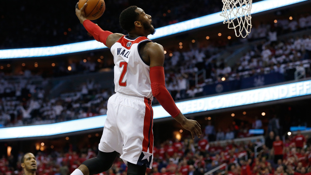
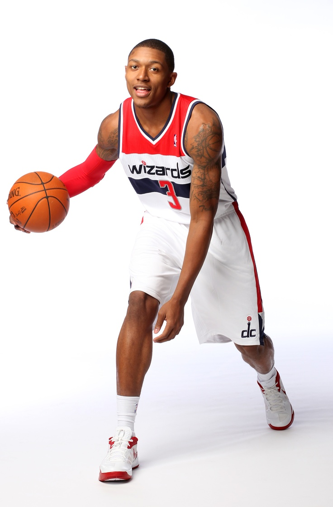
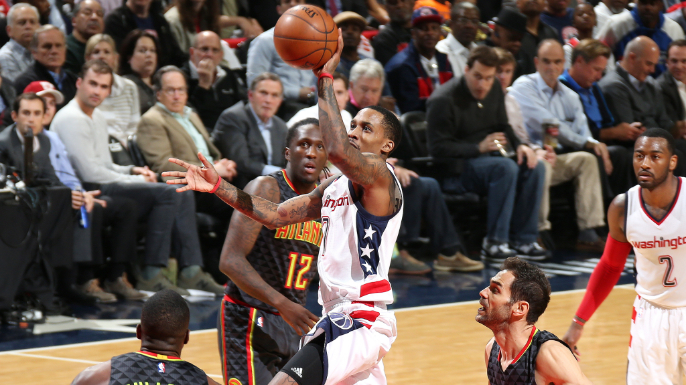
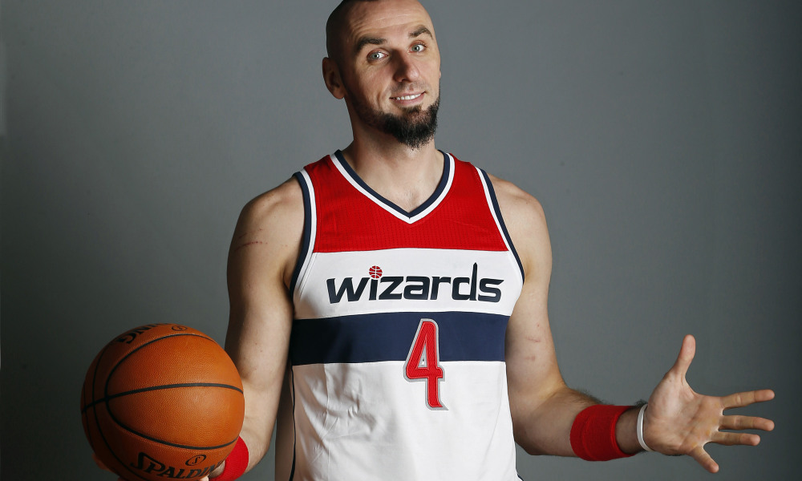
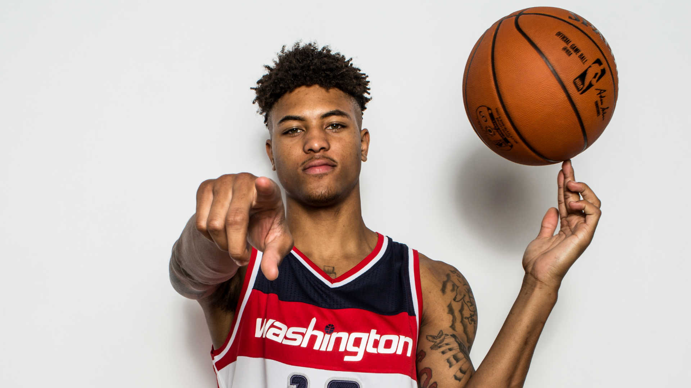

Wizards Player Profiles
Who are some of your favorite Wizards? Pick a few!
John Wall
John Wall | Guard | #2 Team: Washington Wizards Age / DOB: (26) / 9/6/1990 Ht / Wt: 6'4' / 210 College: Kentucky Drafted: 2010 / Rd. 1 (1) / WAS
John Wall (ankle, wrist) is good to go for Game 3 vs. the Celtics on Thursday. Wall sat out of the morning shootaround with a sore right ankle and sore left wrist, but the Wizards were just being cautious and managing his reps. Wall tweaked his ankle in Game 1, but it wasn't an issue in Game 2 as he racked up 40 points with 13 assists, three rebounds, three steals, three blocks and three 3-pointers in 47 minutes. As for his wrist, he tweaked it after a hard fall in Game 2 but was able to carry on. His fantasy owners can still deploy him with confidence. In Wall's own words, he said he's "perfectly fine" and that he won't be limited. May 4 - 12:11 PM
Bradley Beal
Bradley Beal | Guard | #3 Team: Washington Wizards Age / DOB: (23) / 6/28/1993 Ht / Wt: 6'5' / 207 College: Florida Drafted: 2012 / Rd. 1 (3) / WAS
Bradley Beal scored 27 points on 9-of-19 shooting during Sunday’s Game 1 loss, adding four 3-pointeres, four assists, one rebound, one steal, one block and three turnovers in 40 minutes. Beal had the hot hand early for the Wizards as they opened the game with a 22-5 run, but the Celtics locked in defensively after the first quarter and a lot of miscues on offense with some careless turnovers ultimately cost Washington the game. Overall, Beal was solid in this one, but he’ll need some more help from his teammates for Washington to steal Game 2 on the road. Apr 30 - 4:35 PM
Brandon Jennings
Team: Washington Wizards Age / DOB: (27) / 9/23/1989 Ht / Wt: 6'1' / 170 College: Oak Hill Academy Drafted: 2009 / Rd. 1 (10) / MLW
Brandon Jennings gave the Wizards a lift on Wednesday with 10 points, four rebounds and two assists in 17 minutes off the bench. Jennings got hot at a perfect time in the fourth quarter, with a string of huge offensive plays, helping to erase the Hawks' late lead. It should be mentioned that he was being defended by Jose Calderon during his spurt, and his defense tonight was questionable at best, so skepticism is warranted. Apr 19 - 10:11 PM
Marcin Gortat
Marcin Gortat | Center | #13 Team: Washington Wizards Age / DOB: (33) / 2/17/1984 Ht / Wt: 6'11' / 240 College: Poland Drafted: 2005 / Rd. 2 (27) / PHO
As expected, Marcin Gortat (ankle) confirmed that he will play in Game 2 vs. Boston on Tuesday. Gortat tweaked his ankle late in the third quarter of Game 1 on Sunday, but was never in doubt for Game 2. "Yeah, I twisted my ankle. Listen, I mean, I’m not made of sugar," Gortat said Monday. "I’m Poland finest. Hashtag Poland Finest. Poland made. Any other day — but I can’t. I can’t, I can’t break down right now. I’m the last big man standing here, I have to play the highest level." With Jason Smith (calf) and Markieff Morris (ankle) nursing injuries, the Wiz need Gortat to log heavy minutes. May 2 - 9:16 AM
Kelly Oubre
Kelly Oubre | Forward | #12 Team: Washington Wizards Age / DOB: (21) / 12/9/1995 Ht / Wt: 6'7' / 205 College: Kansas Drafted: 2015 / Rd. 1 (15) / ATL
Coach Scott Brooks said Kelly Oubre will start Game 2 vs. Boston on Tuesday if Markieff Morris (ankle) is unable to play. Morris is dealing with an ankle sprain and will be a game-time decision. Oubre started the second half of Game 1 after Morris was ruled out. Oubre finished the game with 12 points, one rebound, two blocks and two 3-pointers in 26 minutes. If Morris does not play, Oubre will be worth DFS consideration due to his affordable price tag. May 2 - 12:40 PM